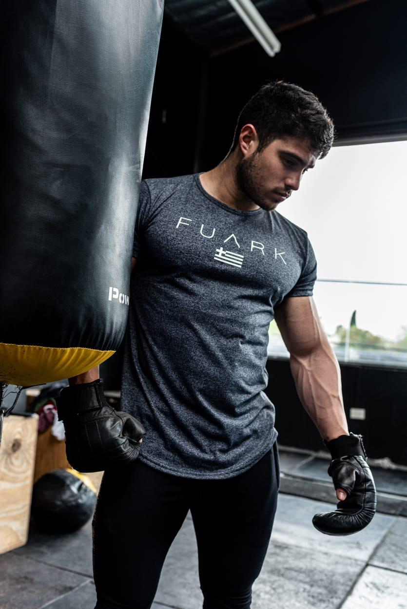

El Deporte, una actividad que nos beneficia más allá de lo que pensamos
El efecto del deporte en la salud y en la mente
09/11/21
El efecto de la actividad física en las funciones cognitivas (memoria, motricidad, etc.)
El deporte, a pesar de tener numerosos beneficios en nuestra salud física también llega a
tener un impacto en cómo funciona nuestra mente. Alguna vez te has preguntado ¿cómo es que
el deporte puede influir en nuestro aprendizaje? El propósito de este artículo es hacer
conscientes a las personas sobre cómo es que la actividad física no solo nos beneficia a un
nivel físico, sino que también tiene un gran impacto cognitivo.
Desarrollo
En este blog analizaremos tanto estadísticas como experiencias personales con el propósito de
concientizar a la gente sobre los diferentes beneficios que puede tener el deporte en su
vida personal. Muchas veces podemos llegar a pensar que los beneficios del deporte
simplemente se limitan al ámbito físico, sin embargo, con este blog nos vamos a poder dar
cuenta de que esto no podría estar más alejado de la realidad ya que el deporte puede llegar
a afectar areas de nuestras vidas que nunca imaginaríamos y incluso puede llegar a tener un
gran impacto en nuestra sociedad.
Motivación
Personalmente he sido testigo de como el deporte ha tenido un impacto realmente positivo en
mi vida y me parece sumamente importante compartir información para que cada día más
personas adopten este gran hábito.
Los efectos del deporte no solo se aprecian a un nivel físico.
Top
deportes más recomendables para aumentar la actividad física:
14/12/21
Fútbol Soccer
Basquetbol
Voleibol
Tenis/Padel/Badninton
Béisbol
Balonmano
Atletismo
Ciclismo
Waterpolo
Levantamiento de Pesas
Los deportes mencionados anteriormente han sido elegidos ya que no solo son una muy buena
opción para mejorar la actividad física, sino que también tienen un bajo riesgo de lesiones
(siempre y cuando sean practicados correctamente) y fomentan el desarrollo de otras
habilidades como los son el trabajo en equipo, la comunicaión, entre otras.
La clave está en encontrar la disciplina que más te guste y hacer deporte mientras
la practicas.
Dentro de los sitios anteriormente mencionados se encuentra el sitio oficial de Jeff
Cavaliere, quien es uno de los mejores fisioterapeutas y entrenadores del mundo al igual que
se encuentra la página oficial de la Federación Mexicana Nutrición Deportiva la cual incluye
valiosa información sobre la cuál es la mejor opción para nuestras dietas personales. Aunado
a esto, hemos incluido páginas que contienene valiosa información cómo es que el deporte
beneficia no solo a nuestra salud física, sino también a nuestra salud emocional e incluso a
nuestra inteligencia.

Hacer deporte tiene un impacto muy grande en distintos ámbitos de nuestras vidas y
nunca podemos olvidar que solo contamos con un cuerpo por lo que hay que cuidarlo
Actividad física y su relación con la salud y el cerebro, por Francisco Ortega
16/01/22
Canal: UGRmedia, Video Publicado el 22 de diciembre del 2016
Personalmente he sido testigo en los beneficios que puede traer el ejercicio no solo en mi
persona, sino que también en las personas que me rodean. Un mejor estado de ánimo, más
energía, más seguridad en uno mismo son tan solo algunos de los beneficios que he logrado
apreciar cuando practico ejercicio con regularidad y aunado a esto los beneficios a largo
plazo para el cuerpo no se pueden dejar de lado. Personalmente considero que nuestra
sociedad sería mejor en muchos aspectos si todos hiciéramos ejercicio y aunque es verdad que
esto requiere disciplina y dedicación los resultados lo valen.
Como podemos percatarnos, los beneficios de la actividad física es algo que ya está más que
investigado y algo que me parece importante recalcar de este video es el énfasis que se hace
en los problemas que puede traer el no hacer ejercicio. Como pudimos percatarnos, el término
"salud" no solo implica estar bien a un nivel físico, sino que también a un nivel emocional
y mental y dado que el ejercicio nos apoya en todos estos niveles no tenemos razón para no
practicarlo con regularidad.
Investigación
28/01/2022
El deporte y la salud mental:
Como ya sabemos, los beneficios del deporte van más allá de el ámbito físico.
Investigaciones han demostrado que la práctica deportiva previene patologías físicas
debido a la activación del sistema inmunológico y enfermedades degenerativas como el
alzhéimer, ya que influye en una mejor concentración1, de igual manera el
depore
ayuda a equilibrar las sustancias que al no estar ajustadas generan enfermedades por lo que
a grandes rasgos podemos decir que el deporte actua como una especie de
Medicina.
El deporte también ayuda tremendamente a la confianza y a la autoestima de una
persona ya que a pesar de que los beneficios estéticos del deporte no son lo
más importante, es verdad que estar contento con la parte visual del cuerpo de uno mismo
brinda seguridad lo cual ayuda a la autoestima lo cual puede ayudarnos a prevenir
enfermedades mentales como lo son la depresión, la anorexia, entre otras.
Es importante recalcar que el deporte también conlleva un riesgo si no es llevado a
cabo de
manera adecuada, sin embargo los beneficios de este definitivamente valen la
pena a
comparación de su contraparte negativa. Los doctores recomiendan calentar de manera
adecuada, mantener una dieta saludable y un horario de descanso constante y suficiente,
acudir al médico si cualquier tipo de molestia se presenta y de igual manera aclarar
cualquier duda sobre si sería adecuado practicar cierta actividad.
El efecto del deporte en el rendimiento académico:
Aunque parezca irreal, practicar deporte de manera constante puede beneficiar a los niños y
jóvenes a tener un mejor desempeño en su educación. Tal como lo estableció irene Esteban
Cornejo, quien es la coordinadora del departamento de educación física, deporte y motricidad
de la Universidad Autónoma de Madrid, Una mejor condición física hace que la
concentración en clase sea mayor1. Esto se debe a que la actividad física
tiene un efecto sobre la fierza muscular, las habilidades motoras y las capacidades
cardiorespiratoria. Todas estas funciones influyen en la transmisión y flexibilidad
cognitiva y en la memoria de trabajo por lo que podemos observar cómo es que el deporte nos
puede ayudar a mejorar el rendimiento académico.
Como podemos observar, distintas investigaciones respaldan el hecho de que los
beneficios
del deporte se pueden extender hasta el ámbito académico lo cual incluso podría
tener un
impacto positivo en el autoestima de los niños ya que al obtener mejores calificaciones se
pueden llegar a sentir mejor con ellos mismos. Un expermiento realizado en Madrid demostró
que en efecto existía una correlación entre la práctica frecuente del deporte y la obtención
de mejores resultados en el ámbito académico.
Desempeño académico sobre más de 2,000 niños (6 a 18 años)
La importancia del hábito del deporte en el desarollo de los niños:
Ya hemos establecido numerosos beneficios del deporte en las personas, ahora bien, ¿cómo es
que el deporte podría tener un impacto en la educación de los niños?, pues bueno la
respuesta en realidad es más compleja de lo que creemos. Estudios han confirmado que son
múltiples los beneficios que aporta el deporte en la infancia y adolescencia. Desde el
bienestar físico hasta la trasmisión de valores2.
Numerosas investigaciones han estudidado la relación entre el comportamiento de los niños y
su relación con el deporte y está demostrado que la práctica regular del
deporte:2
Favorece el crecimiento tanto físico como mental
Promueve la creación de buenos hábitos
Enseña responsabilidad y respeto
Potencía las habilidades sociales
Fomenta el trabajo en equipo
Fomenta el liderazgo
Evita el sedentarismo
Me parece justo concluir que los beneficios del deporte van mucho más allá de lo que nos
podríamos haber imaginado. Es importante empezar a adoptar este hábito lo antes posible ya
que nos puede ayudar a mejorar como sociedad y realmente nos peude ayudar a aumentar
nuestras capacidades tanto físicas, cognitivas e incluso sociales. Estamos en una época en
donde tenemos que priorizar nuestra salud ya que si algo nos ha demostrado la pandemia es
que sin ella nada de lo demás tiene sentido. Adoptar el hábito del deporte no es fácil, sin
embargo los beneficios hacen que el sacrificio valga la pena y dando pasos pequeños creo
firmenente que la vidad de todos puede cambiar para bien.
"Los niños no aprenden escuchando, aprenden imitando" -Anónimo
Entrada
Libre - Cosas a considerar en el deporte
18/02/2022
Autor: Pablo Rubio Segura
Fecha de Publicación: 18/02/2021
 El efecto del deporte en la salud y en la mente
El efecto del deporte en la salud y en la mente
 Top
deportes más recomendables para aumentar la actividad física:
Top
deportes más recomendables para aumentar la actividad física:
 Actividad física y su relación con la salud y el cerebro, por Francisco Ortega
Actividad física y su relación con la salud y el cerebro, por Francisco Ortega Investigación
Investigación
 Entrada
Libre - Cosas a considerar en el deporte
Entrada
Libre - Cosas a considerar en el deporte El
resultado de una simple desición
El
resultado de una simple desición